昨日回顾
define(“常量名”, 常量值 );
const 常量名 = 常量值；
const语法只能用在“顶层代码”位置，而不能用在大括号的位置，比如：
const C1 = 1; //ok
if ( $v1 > 5){
const c2 = 2; //错误的！！！
}
方法1：直接使用常量名：
echo C1;
方法2： 使用函数constant（）取值：
echo constant(“C1”);
这种方式有灵活性：
$i = 1;
$s = “C” . $i;
echo constant($s); //这里也是取得C1这个常量的值；
$v1 = defined( “C1”); //true；
$v2 = defined( “CCC222”); //false
常见的其实是这样：
if( defined(常量名) ){
.......
}
else{
........
}
需要注意而已！它会当做有该常量一样去使用，其值就是该名字。
PHP_OS
PHP_VERSION
PHP_INT_MAX
M_PI
魔术常量：目前就3个
__DIR__
__FILE__
__LINE__
基本类型（标量类型）：int, float, string, bool
复合类型：array, object
特殊类型: null, resource
$n1 = 123;
$n2 = 0123; //以0开头的数字就是8进制形式
$n3 = 0x123; //以0x开头的数字是16进制
$n4 = 0b101010; //二进制
4个单词：dec, bin, oct, hex
10进制转换为2,8,16进制：要求给出的原始数据是一个10进制的数字——如果不是，就会自动转换为10进制数字。结果，返回的是一个对应进制数字的字符串。
$v1 = decbin($n);
$v2 = decoct($n),
$v3 = dechex($n)
2,8,16进制转换为10进制：要求给出的原始数据是一个应进制数字的字符串，——如果不是，就会自动转换为字符串。结果，返回的是一个10进制的数字值；
$v1 = bindec($n);
$v2 = octdec($n),
$v3 = hexdec($n)
2,8,16进制，转换为10进制的基本做法：将每位数字乘以该位的权值，然后相加的结果
10进制，转换为2,8,16进制的基本做法：除2,8,16，取余，直到商为0，所有余数倒着写出
有小数点： $f1 = 1.23;
有科学计数法的符号E： $f2 = 1.23E4; $f2 = 123E4;
1，不要对浮点数直接进行大小比较，而应该在考虑应用的精度需求的基础上，转换为整数然后进行比较。
2，（了解）：浮点数小数的二进制转换：将小数部分乘以2，取得其整数部分，如果还有小数，继续乘以2，直到小数消失（其实极少会发生这种情况），然后将所有整数部分按顺序写出来，就是对应的小数。
3，整数运算如果超过了整数的最大值，会自动转换为浮点数。
可识别转义符：\\ \” \n \r \t \$
还可以识别其中的变量；
可识别转义符：\\ \’
$str1 = <<<”标识符”
字符的内容部分。。。
标识符;
可识别转义符：\\ \n \r \t \$
还可以识别其中的变量
$str1 = <<<’标识符’
字符的内容部分。。。
标识符;
布尔类型:
被“认为”是false的数据只有如下几个：
false， 0， 0.0 “”, “0”, array(), null, 未定义变量
通常用于如下场合：
if( $变量名 ){
......
}
在运算中需要某种数据的时候，如果不是该种数据，就会自动转换为该种数据。
(目标类型)数据；
运算符
算术运算符
基础：
符号有：+ - * / %
说明：
1，他们都是针对数字进行的运算；
2，如果他们的两边有不是数字的数据，就会（自动）转换为数字；
3，其中取余运算（取模运算）%，它只针对“整数”进行运算，如果不是，会自动截取为整数。
11. 3 % 3 相当于 11 % 3;
11.8 % 3. 8 相当于 11 % 3;
自增自减运算符：
· 常规：对数字进行自加1或自减1。
· 字符串： 只能自增，且自增的效果就是“下一个字符”，其只能针对字母或数字进行自加：
· 布尔值递增递减无效
· null递减无效，递增结果为1
字符串自增的例子：
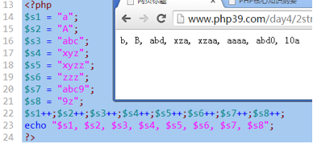
前自增和后自增的区别（自减类似）
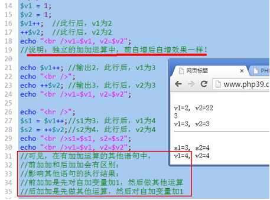
通常，我们在循环中，推荐使用前加加，比如：
for($i = 1; $i < 10000; ++$i){ ....... }
演示前加加后加加进行1千万次的“效率比较”：
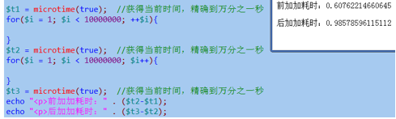
比较运算符
· 符号：> >= < <= == != === !==
· 一般比较：是针对数字进行的大小比较
· ==和===比较：前者通常叫做模糊相等的比较，后者叫做精确相等的比较（只有数据的类型和数据的值/内容，都相等，才是全等的）。必须能够找到手册的“类型比较表”：附录》php类型比较表：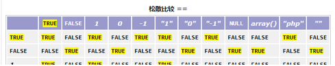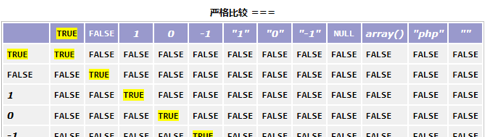
· 不要对浮点数直接进行大小比较
常见不同类型（标量类型）数据之间的比较规律：
· 如果比较的数据中，有布尔值，转为布尔值比较，布尔值比较只有一个规则：true>false
· 否则，如果有数字值，就转为数字值比较：这就是常规比较。
· 否则，如果两边都是“纯数字字符串”，转为数字比较
· 否则，就按字符串比较。字符串比较的规则是：
o 对两边的字符串，一个一个从前往后取出字符并进行比较，谁“先大”，结果就是它大。
“abc” > true //? false
“abc” > false //true
“0” > false //false
3 > “12”; //false
3 > “12abc”; //false
“3” > “12” //false
“abc” > “c”; //false，后者大
“abc” > “ab123cde”; //true 因为这里”c”大于”1”
“3abc” > “12abc”; //true, 因为”3”大于“1”
1 > “a”; //? true
“1” > “a” //? false
逻辑运算符
逻辑运算符都是针对“布尔值”进行的运算。
如果不是布尔值，就会转换为布尔值进行；
布尔值只有2个：true，false
基本运算规则（真值表）：
逻辑与规则：
true &&
true ==>> true
true &&
false ==>>false
false &&
true ==>>false
false &&
false ==>>false
总结：只有2个都是true，结果才是true
只要有一个是false，结果就是false
逻辑或规则：
true ||
true ==>> true
true ||
false ==>>true
false ||
true ==>>true
false ||
false ==>>false
总结：只有2个都是false，结果才是false
只要有一个是true，结果就是true
逻辑非规则：
!true ==>> false
!false ==>> true
逻辑运算符的“短路现象”：
逻辑与短路：
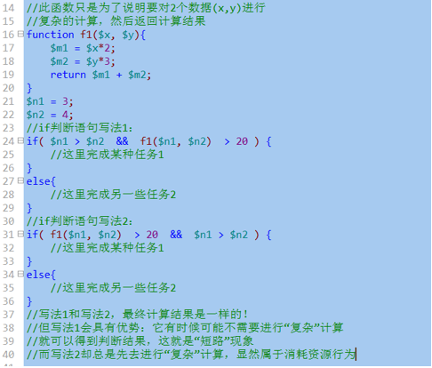
结果：如果一个语句中，通过与运算需要进行多项判断，而且不同的判断具有明显不同的“复杂程度”，则我们应该将简单的判断放在前面，这时候我们就可以利用短路现象以达到提高效率的目的。
逻辑或短路：
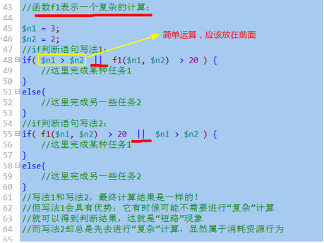
结果：如果一个语句中，通过或运算需要进行多项判断，而且不同的判断具有明显不同的“复杂程度”，则我们应该将简单的判断放在前面，这时候我们就可以利用短路现象以达到提高效率的目的。
字符串运算符
1，符号只有一个：. 也衍生出另一个： .=
2，含义：就是将这个符号两边的字符串连接起来；
3，如果两边不是字符串，就会自动转换为字符串，然后连接起来。
“ab” . 3 ==>> “ab3”;
“12” . 3 ==>>”123”
12 . 3 ==>> “123”
赋值运算符：
一个基本赋值运算符： =
形式： $变量名 = 值；
理解： 将右边的值（不管做了多少运算），赋值给左边的变量。
若干个衍生的赋值运算符：
+= 加等： 形式： $变量名 += 值；
理解： 相当于： $变量名 = $变量名 + 值；
-= 加等： 形式： $变量名 -= 值；
理解： 相当于： $变量名 = $变量名 - 值；
*= /= %= .= 其都可以认为是上述形式的一种简化版。
条件（三目，三元）运算符
只有一个，形式如下：
数据值１ ？ 数据值２ ： 数据值３
含义：
对数据值１进行判断，如果为“真”，则该运算符的运算结果就是数据值２，否则就是数据值３；
它是这样一个流程控制（逻辑判断）语句的简写形式：
ｉｆ（ 数据值１ ）｛
＄变量名 ＝ 数据值２；
｝
ｅｌｓｅ｛
＄变量名 ＝ 数据值３；
｝
注意：如果数据值１不是布尔值，也会转换为布尔值；
$score = 66; //分数
$valuation = $score >= 60 ? “及格” : “不及格”； //结果为“及格”
$score = 56; //分数
$valuation = $score >= 60 ? “及格” : “不及格”； //结果为“不及格”
$score = 56; //分数
$valuation = $score ? “及格” : “不及格”； //结果为“及格”，这里可能就偏离的本意！！
位运算符
基础规定
1，位是什么？就是2进制数字的每一个“位”，一个整数数字，有（由）32个位构成！
2，位运算符是仅仅针对整数进行的运算符；
3，位运算符有如下几个
&： 按位与；
|： 按位或；
~： 按位非；按位取反；
^： 按位异或；
4，位运算符的基本语法规则：
按位与基本规则：
1 & 1 ==>> 1
1 & 0 ==>> 0
0 & 1 ==>> 0
0 & 0 ==>> 0
按位或基本规则：
1 | 1 ==>> 1
1 | 0 ==>> 1
0 | 1 ==>> 1
0 | 0 ==>> 0
按位非基本规则：
~1 ==>> 0
~0 ==>> 1
按位异或基本规则：
1 ^ 1 ==>> 0
1 ^ 0 ==>> 1
0 ^ 1 ==>> 1
0 ^ 0 ==>> 0
可见，按位异或的规则是：相同为0，不同为1
整数的按位与运算（&)
形式：
$n1 & $n2; //n1，n2是2个任意整数；
含义：
将该2个整数的二进制数字形式（注意，都是32位）的每一个对应位上的数字进行基本按位与运算之后的结果！
注意：他们运算的结果，其实仍然是一个普通的数字（10进制）。
示例图示（只用8个位来演示）：
$r1 = 10 & 20;
|
10的2进制 |
0 |
0 |
0 |
0 |
1 |
0 |
1 |
0 |
|
20的2进制 |
0 |
0 |
0 |
1 |
0 |
1 |
0 |
0 |
|
&运算结果： |
0 |
0 |
0 |
0 |
0 |
0 |
0 |
0 |
代码验证：
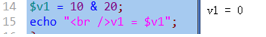
整数的按位或运算：
形式：
$n1 | $n2; //n1，n2是2个任意整数；
含义：
将该2个整数的二进制数字形式（注意，都是32位）的每一个对应位上的数字进行基本按位或运算之后的结果！
注意：他们运算的结果，其实仍然是一个普通的数字（10进制）。
示例图示（只用8个位来演示）：
$r1 = 10 | 20;
|
10的2进制 |
0 |
0 |
0 |
0 |
1 |
0 |
1 |
0 |
|
20的2进制 |
0 |
0 |
0 |
1 |
0 |
1 |
0 |
0 |
|
|运算结果： |
0 |
0 |
0 |
1 |
1 |
1 |
1 |
0 |
则结果该数据值大小为： 1*24 + 1 * 23 + 1*22 + 1* 21 + 0 = 16 + 8 + 4 + 2 = 30
代码验证：
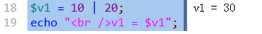
整数的按位左移运算
形式：
$n1 << $m
含义：
将十进制数字n1的二进制数字形式（也是32位的）的每一个位上的数字都一次性往左边移动m位，
并将右边空出来的位置补0，左边冒出去的不管，这样操作之后得到的结果。
示例图示（只用8个位来演示）：
$r1 = 10 << 2;
|
10的2进制 |
0 |
0 |
0 |
0 |
1 |
0 |
1 |
0 |
|
左移2位后 |
0 |
0 |
1 |
0 |
1 |
0 |
0 |
0 |
|
则结果为： |
|
|
25 |
0 |
23 |
0 |
0 |
0 |
可见，结果为：25 + 23 = 32 + 8 = 40
代码验证：
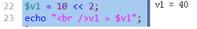
补充知识：原码，反码，补码
原码：
就是一个二进制数字，从“数学观念”上来表达出的形式。其中，我们规定：
一个数字的最左边一位是“符号位”，0表示正数，1表示负数；
比如：
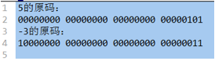
反码：
正数的反码就是其本身（即不变）；
负数的反码是：符号位不变，其他位取反；
比如：
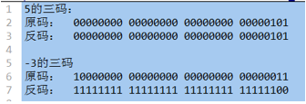
补码：
正数的补码就是其本身（即不变）；
负数的补码是：符号位不变，其他位取反后+1——即反码+1
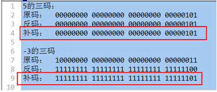
一个小提示：计算机内部的运算，实际全都是使用补码进行的，而且运算的时候，符号位不再区分，直接也当做“数据”参与运算：
示例1：
5+3：
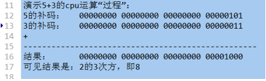
示例2： 5-3：
实际上，cpu内部，会将“减法”运算，转换为“加法运算”，即：5 + （-3）
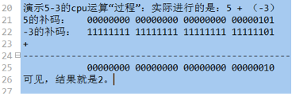
位运算符的应用：管理一组事物的开关状态
什么是开关状态？
现实中，有很多数据都是只有2种结果（值）的，对应的其实就是我们的布尔类型的值。
这里，所谓管理一组事物的开关状态，应该理解为其实就是管理若干个只有2个状态的“数据符号”。
比如：有5个灯泡，对应5个状态数据。
这5个灯泡，就有 25 种状态呢？
这里的管理目标是：使用一个变量，就可以表达若干个数据的“当前状态”。具体有3个任务：
1，通过该变量，可以获知任何一个数据（灯泡）的当前状态。
2，通过该变量，可以将一个一个数据的状态“关闭”；
3，通过该变量，可以将一个一个数据的状态“开启”；
看代码！！！
数组运算符
有这些：
+: 数组联合，也可以理解为“数组串联”。
将右边的数组项合并到左边数组的后面，得到一个新数组。如有重复键，则结果以左边的为准
$arr1 = array(5=>10, 8=>20, 10=>30);
$arr2 = array(3=>33, 2=>22);
$r1 = $arr1 + $arr2; //结果为：array(5=>10, 8=>20, 10=>30， 3=>33, 2=>22)
另一个有重复键的例子：
$arr1 = array(5=>10, 8=>20, 10=>30);
$arr2 = array(8=>33, 2=>22);
$r1 = $arr1 + $arr2; //结果为：array(5=>10, 8=>20, 10=>30， 2=>22)
= =：如果两个数组具有相同的键名和键值（可以顺序不同，或类型不同），则返回true
$arr1 = array(3=>33, 2=>22);
$arr2 = array(2=>”22”， 3=>”33” );
此时，$arr1,和 $arr2是相等的（ = = ）
!=
= = =： 如果两个数组具有相同的键名和键值且顺序和类型都一样，则返回true
!= =
错误控制运算符@：
通常就用在一个地方：
$link = @mysql_connect(“数据库服务器地址”, “用户名”, “密码”);
作用是：
如果该连接数据的语句失败（比如连接不上），则屏蔽该失败的错误提示！
运算符的优先级
运算符，都有优先级问题！
记住以下几条就可以了：
· 要意识到运算符有优先级问题
· 括号最优先，赋值最落后（通常）
· 先乘除后加减
· 大致：单目运算符〉算术运算符〉比较运算符〉逻辑运算符（除了“非”运算）
能查到手册： 语言参考》运算符》运算符的优先级。
流程控制
流程图基本符号：
只是人们习惯上使用的一些图形符号，以代表一定的含义，帮组别人理解流程过程。
流程走向：

开始结束：
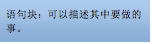
语句（块）：
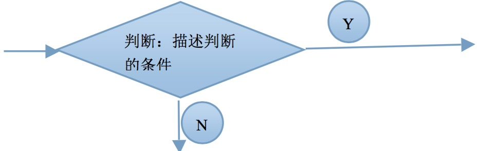
判断：
输入输出：
if分支结构
基本语法形式如下：
if (条件判断1）{
分支1；
}
else if (条件判断2）{
分支2；
}
else if (条件判断3）{
分支3；
}
。。。。。。
else {
//else分支
}
说明：
1，其中，绿色的else if部分可以重复若干次，也可以完全省略！
2，其中，紫色的else部分可以完全省略。
3，该if语句会从前往后（从上往下）依次判断条件，如果某个条件满足了，就会执行其中对应的分支，然后就结束if分支结构语句！
4，如果前面所有条件都不满足，就会执行最后的else分支（前提是有else分支）。
图示如下：
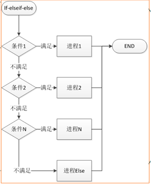
switch分支结构
形式：
switch ( 表达式 ){
case 条件值1：
分支1；
【break；】 //是可以省略部分，不是语法所必须；
case 条件值2：
分支2；
【break；】 //是可以省略部分，不是语法所必须；
........
default ：
default 分支；
}
说明：
1，将表达式的结果数据，跟“条件值1”进行“相等判断”，如果相等，就执行分支1，否则继续对后续值进行判断。。。。
2，如果某个分支判断为相等，则执行该分支语句后，并且如果其中没有break语句，则会直接进入下一个分支继续执行，而不会再去判断下一个分支的条件值了，并直到碰到break语句才会跳出。
关系图如下所示：
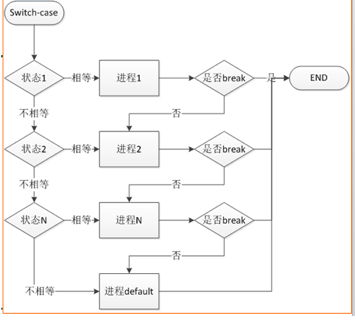
举例如下：
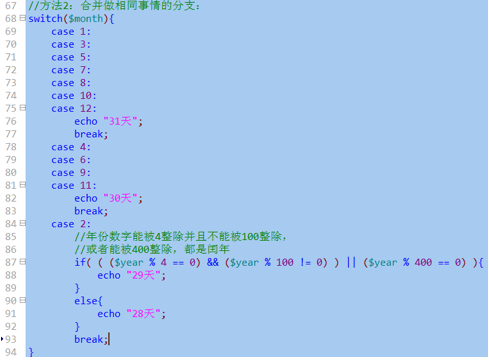
for循环结构
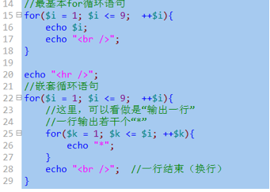
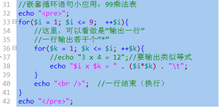